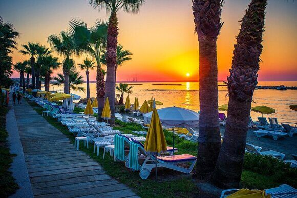

« НазадНовые правила отдыха на Кипре в 2025 году Путешествия – это всегда возможность открыть для себя новые горизонты, отдохнуть от городской суеты и зарядиться новыми впечатлениями. В 2025 году Кипр становится особенно интересным направлением для российских туристов. После многих лет популярности этот средиземноморский остров переживает ряд значительных изменений, которые касаются визовых требований, авиасообщения и даже туристической инфраструктуры. Особенно важно отметить, что с 2025 года Кипр активно готовится к вступлению в Шенгенскую зону, что обещает упростить многие процедуры для путешественников. В этой статье мы расскажем, какие изменения произошли для россиян, что ожидать от нового визового режима, как влияет вступление Кипра в Шенгенскую зону на пересечение границ, а также поделимся полезными советами и примерами из жизни. Исторический обзор и причина измененийПочему отдых на Кипре был так популярен у россиянЕще два десятка лет назад Кипр стал любимым местом отдыха для российских туристов благодаря своему мягкому климату, чистому морю и богатой истории. Российские туристы могли насладиться теплым солнцем, кристально чистой водой и традиционной кипрской кухней, не задумываясь о сложностях на границе или длительном оформлении документов. Известность острова росла, а туристы ценили возможность регулярного выезда на отдых, даже если не всегда удавалось обойтись без бюрократических проволочек. Основные вызовы прошлых летНесмотря на всю привлекательность Кипра, прошлое не обходилось без своих сложностей. Одним из главных препятствий для туристов были визовые ограничения. Каждый раз, планируя поездку, многие сталкивались с необходимостью сбора обширного пакета документов, долгим ожиданием ответа от консульств и различными бюрократическими проволочками. Отсутствие прямых рейсов из России также играло свою роль: приходилось выбирать пересадочные города, что добавляло неопределенности и времени в дорогу. Еще одной проблемой была сложность взаимодействия с местными и российскими ведомствами: правила оформления виз постоянно менялись, что вызывало недоумение даже у опытных путешественников. В итоге туристы нередко приходили в замешательство, а поездку приходилось переносить из-за того, что не все документы были оформлены правильно. Ожидаемые изменения в 2025 годуНаступление 2025 года ознаменовалось рядом технических и политических изменений, направленных на упрощение путешествий между странами. Одним из ключевых событий стало стремление Кипра войти в Шенгенскую зону. Это решение было принято с учетом необходимости улучшения безопасности, упрощения пограничного контроля и развития туристической инфраструктуры. Присоединение к Шенгенскому пространству сулит массу положительных моментов: от облегчения процедур на границах до расширения возможностей для путешественников, которые могут теперь свободно перемещаться между странами-членами без необходимости многократного оформления виз. Эти изменения не только облегчат жизнь туристам, но и повлияют на экономическую привлекательность острова. Улучшенная инфраструктура, дополнительные инвестиции и повышение уровня обслуживания гостей Кипра помогут превратить его в ещё более востребованное направление для отдыха. Однако вместе с плюсами возникают и новые требования к документам, срокам оформления виз и планированию поездок, о чем мы поговорим далее. Основные изменения для россиян в 2025 годуПеремены в визовой системе и авиасообщении для посетителей Кипра становятся ключевыми факторами, которые нужно учитывать при планировании путешествия в 2025 году. Рассмотрим подробнее главные изменения. Вступление Кипра в Шенгенскую зонуВступление в Шенгенскую зону означает, что Кипр будет следовать единому стандарту контроля на внешних границах, а внутренние границы между странами-участниками будут отменены. Для туристов это означает:
Для россиян, планирующих поездку на Кипр, эти изменения сулят улучшение и ускорение оформления документов. Теперь, имея шенгенскую визу, турист может рассчитывать на более гладкий процесс проверки паспортов при въезде и выезде. Это значительно сократит время ожидания и снизит стресс при прохождении таможни. Кроме того, упрощение правил пересечения границ способно положительно сказаться на организации трансфера и внутренних перевозок. Технические и политические аспекты измененийКонечно, процесс вступления Кипра в Шенгенскую зону сопряжен с определенными техническими и политическими сложностями. Страна должна обеспечить соответствие всем стандартам безопасности, модернизировать системы контроля и интегрировать свою инфраструктуру в единую систему Шенгена. Этот процесс требует тесного сотрудничества не только на государственном уровне, но и со всеми заинтересованными сторонами – от авиакомпаний до туроператоров и визовых центров. Для туристов же, итоговый результат будет очевиден – более прозрачный и быстрый процесс пересечения границ. Новые визовые требования и документыС вступлением в Шенгенскую зону изменится и визовый режим для россиян, посещающих Кипр. Новые требования призваны усилить контроль и обеспечить максимальную безопасность. Однако они также требуют больше внимания при подготовке документов. Обновлённый перечень документовВ 2025 году россиянам необходимо предоставить расширенный пакет документов для оформления визы на Кипр. Этот перечень включает:
Изменения в сроках рассмотрения визовых заявленийНовые требования предполагают более тщательную проверку документов. В связи с этим сроки рассмотрения заявок могут увеличиться. Теперь рекомендуется подавать заявление минимум за 15 дней до планируемой поездки. Это позволит избежать возможных задержек и дополнительных проблем, связанных с оформлением документов в последний момент. Особенности оформления визы для детей и спонсорские письмаДля семей, планирующих отдых на Кипре, важно знать дополнительные нюансы. Виза для детей до 6 лет может оформляться бесплатно или с минимальными сборами, а для детей в возрасте от 6 до 12 лет сборы ниже стандартных. Также большое значение придается спонсорским письмам – документам, подтверждающим финансовую поддержку и готовность обеспечить пребывание ребенка или взрослого сопровождения. Эти письма должны быть составлены в строгом соответствии с требованиями консульства, чтобы избежать отказа. Изменения в авиасообщении и трансферахЕще один важный аспект – изменения в авиасообщении. В связи с новыми политическими реалиями и санкциями прямых рейсов из России на Кипр на данный момент нет. Это означает, что путешественники должны выбирать маршруты с пересадками. Такие маршруты зачастую проходят через транзитные города, что может увеличить общее время перелета, однако в комплексе с улучшенными условиями в шенгенской зоне это не выглядит таким уж критичным. Советы по выбору транзитных городовПопулярными вариантами для пересадок сегодня являются города, такие как Ереван и Тбилиси. Они предоставляют удобное стыковочное время, качественную инфраструктуру и возможность сделать короткую экскурсию, если расписание позволяет. Для тех, кто планирует трансфер через данные города, рекомендуется заранее изучить расписание авиарейсов, проверить визовые требования для транзитного пребывания и, при возможности, выбрать пересадку в аэропортах, где гарантирован минимальный формат проверок. Отзывы туристов и примеры из жизниНовые условия не прошли стороной и гостей Кипра. Многие россияне, уже успевшие испытать обновленный визовый режим и изменения в авиасообщении, отмечают, что подготовка поездки в 2025 году стала более структурированной. Например, один турист из Москвы рассказал, что благодаря раннему планированию он успел собрать все необходимые документы и, несмотря на необходимость пересадки в Тбилиси, его поездка оказалась максимально комфортной и организованной. Другой пример – семья, которая планировала летний отдых на острове, смогла без стресса оформить визы для всех членов семьи, включая детей, воспользовавшись услугами профессионального визового центра. Они отметили, что подробные инструкции и консультации специалистов позволили избежать недоразумений даже при наличии мелких ошибок в документах. Эти реальные истории подтверждают, что, несмотря на кажущиеся сложности, новые изменения направлены на повышение качества и надежности процесса оформления документов и организации поездки в целом. Плюсы и минусы новых условийКак и любые значительные изменения в системе, нововведения для путешественников при оформлении виз и пересечении границ имеют свои плюсы и минусы. Рассмотрим их подробнее. Плюсы
Минусы
Советы и рекомендации для путешественниковЧтобы минимизировать возможные неудобства, связанных с новыми правилами и изменениями в визовой политике, поделимся полезными советами и лайфхаками, основанными на опыте реальных путешественников и экспертов. Подготовка документовСоберите полный пакет документов заранее Оформите качественную медицинскую страховку Планирование поездкиЗапишитесь на приём в посольство или визовый центр заблаговременно Исследуйте альтернативные маршруты перелетов через транзитные города Жизненные примеры и лайфхакиИстория успешного планирования Семейный отдых без заминок Лайфхаки от опытных путешественниковМногие туристы советуют:
Эти рекомендации от тех, кто уже прошел через все этапы оформления, помогут сэкономить время и нервы. Ответы на часто задаваемые вопросы (FAQ)Ниже приведен список вопросов с ответами, которые помогут развеять сомнения и прояснить все нюансы. Когда Кипр планирует вступить в Шенгенскую зону? Кипр планирует выполнить все технические требования и присоединиться к Шенгенской зоне в 2025 году. Какие изменения принесет вступление Кипра в Шенгенскую зону для россиян? Присоединение упростит пограничный контроль, позволит путешествовать по странам ЕС без повторного оформления виз и значительно сократит время ожидания в аэропортах. Нужно ли оформлять отдельную визу для поездки на Кипр в 2025 году? Да, несмотря на наличие шенгенской визы, россиянам по-прежнему требуется оформление отдельной туристической визы для въезда на Кипр. Какие документы необходимо собрать для оформления визы? Помимо загранпаспорта с достаточным сроком действия, требуется заполненная анкета, фотографии, документы, подтверждающие финансовую состоятельность (банковские выписки, справки о доходах) и подтверждения бронирования отелей или авиабилетов. Почему сроки подачи документов увеличились? Новые требования предусматривают более детальную проверку документов, поэтому рекомендуется подавать заявку минимум за 15 дней до поездки. Можно ли получить визу на Кипр через шенгенскую визу? Наличие двукратной или многократной шенгенской визы может способствовать упрощению процедуры, однако отдельное оформление туристической визы для Кипра остается обязательным. Как изменился перечень необходимых документов? Теперь дополнительно требуют подробные банковские выписки, справки о доходах за последние месяцы, а также копии всех страниц российского паспорта с отметками. Что делать, если документы оформлены не полностью? Рекомендуется обратиться к специалистам в визовых центрах для проверки пакета документов и устранения возможных ошибок. Есть ли льготные условия для детей при оформлении визы? Да, для детей до 6 лет оформление визы может проходить бесплатно, а для детей в возрасте 6–12 лет сборы ниже стандартных ставок. Какую медицинскую страховку нужно оформить для поездки на Кипр? Страховой полис должен покрывать медицинские расходы минимум до 30 000 евро и действовать на протяжении всей поездки. Изменились ли условия для въезда через северную часть острова? Въезд через Северный Кипр в настоящее время считается незаконным, поэтому рекомендуется использовать международные аэропорты и морские порты официального контроля. Какие транзитные города наиболее удобны для пересадок? Популярными направлениями являются Ереван и Тбилиси, где пересадки проходят быстрее и комфортнее. Как новые изменения повлияют на стоимость поездки? Возможно повышение расходов на оформление виз и бронирование, но улучшенная туристическая инфраструктура и упрощение процедур помогут компенсировать эти затраты. Упрощается ли процесс прохождения паспортного контроля? С вступлением Кипра в Шенгенскую зону процесс становится более быстрым и удобным, что сокращает время ожидания. Можно ли самостоятельно собрать пакет документов для визы? Да, однако рекомендуется проконсультироваться с опытными специалистами, чтобы избежать ошибок и недочетов. Как подготовиться к поездке, если сроки оформления могут затягиваться? Планируйте поездку заранее, учитывая возможную задержку оформления документов, и изучайте альтернативные маршруты перелетов. Что делать, если возникли вопросы по заполнению анкеты? В подобных случаях обратитесь за помощью в специализированные паспортно-визовые центры или к юристам, занимающимся визовыми вопросами. Каковы перспективы туристической отрасли Кипра после вступления в Шенгенскую зону? Ожидается значительный рост туристического потока, развитие инфраструктуры и улучшение инвестиционной привлекательности, что положительно скажется на качестве обслуживания туристов. Заключение и выводыЗа последние годы изменения, произошедшие в туристическом секторе Кипра, затронули практически все аспекты подготовки к поездке для российских туристов. Вступление острова в Шенгенскую зону обещает значительное упрощение при пересечении границ и улучшение комфортного пользования туристической инфраструктурой. Вместе с тем, новые визовые требования и изменения в авиасообщении требуют дополнительной подготовки и более тщательного подхода к сбору документов. Важнейшим выводом становится то, что своевременное планирование и использование профессиональной поддержки в оформлении документов способны значительно снизить стресс и обеспечить беззаботное путешествие. Реальные истории российских туристов, успешно справившихся с новыми условиями, подтверждают, что даже самые сложные изменения можно превратить в полезный опыт, если подходить к процессу подготовки ответственно. Отпуск на Кипре без задержек – оформляем документы за считанные дни!Планируете отдых на Кипре, но сроки поджимают? Паспортно-визовый центр «Север» – это быстрое решение всех ваших проблем с документами! Мы предлагаем срочное оформление загранпаспорта и туристической визы для поездки на Кипр, гарантируя индивидуальный подход и профессионализм, проверенный более чем 25-летним опытом работы. Расположенные в самом сердце Москвы, мы всегда рядом – заходите к нам в удобное время, будь то утро, день или вечер. Наши преимущества:
Позвоните прямо сейчас по номеру +79255854195, и наши эксперты расскажут, как легко и просто оформить все документы. Не упустите шанс отправиться на отдых без забот – выберите качество, надежность и опыт, проверенный временем. Паспортно-визовый центр «Север» – ваш быстрый путь к отпуску мечты!
|
Комментарии
Комментариев пока нет